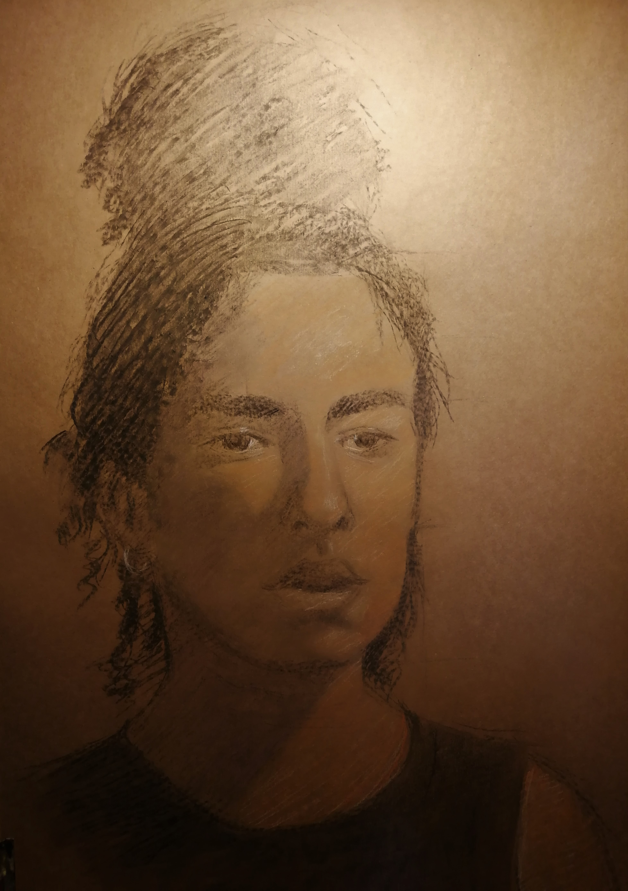
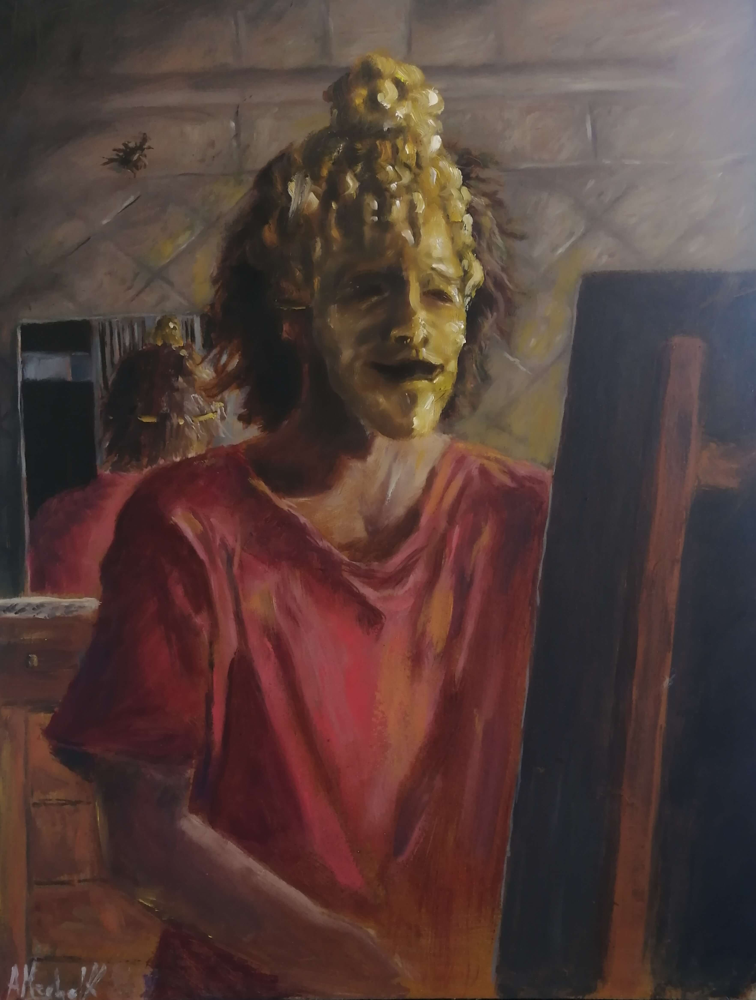

En lo que refiere a retratos siempre es mejor hacerlos del natural, es decir, el/la retratad@ debería posar. Sin embargo se entiende que esto no siempre puede ser cómodo o preferible, por lo cuál también existe la opción de enviar una foto y que un retrato sea hecho a partir de la misma. La técnica utilizada puede ir desde el óleo hasta retratos hechos con pasteles, carbonilla, lápiz o gouache y acuarelas. Al ser altamente personalizados según los requerimientos del cliente, los precios varían. Por cualquier consulta diríjase a la sección de contacto y responderé lo mas pronto posible.